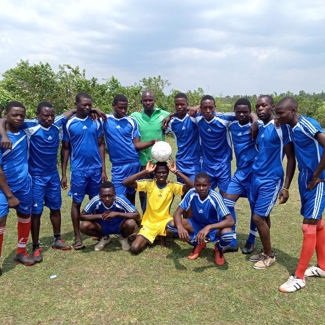

EMMANUEL OCHIENG OKELLO
Engineer
Farmer
Future enterpreneur
Athlete
I am a very passionate individual in and out of my professional work life. I am enthusistic about agriculture and would call myself a farmer. I farm maize, groundnuts and sheep.
I am also a passionate athlete. I competed in a lot of competitions during my school days. I play football which I consider the best sport in the world.
